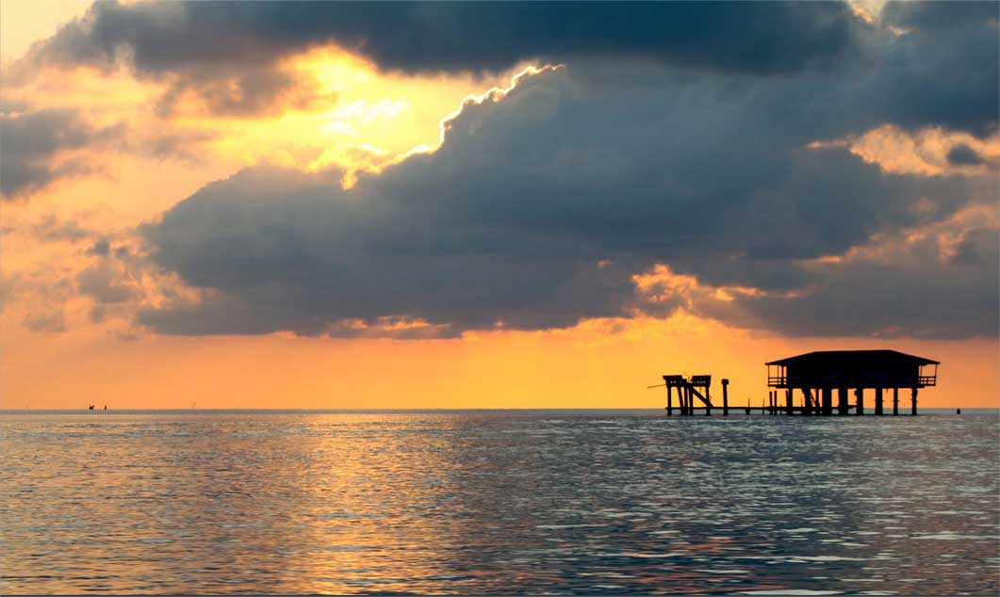
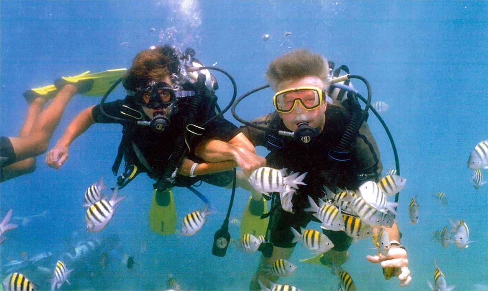
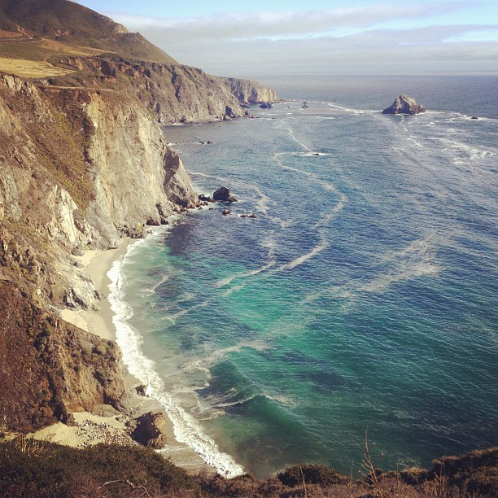
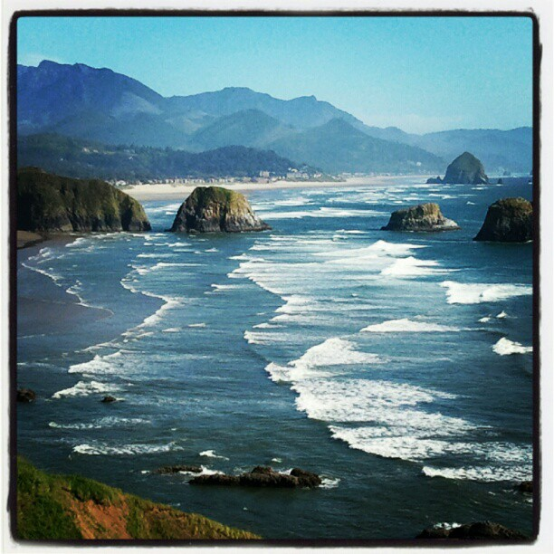

Dive into Biscayne’s natural beauty, filled with untouched islands, exotic coral reef, and histormic tales of pirates and alluring crystal blue waters. Your family will experience more than they could ever imagine at this national treasure. With countless land and sea adventures, you’ll find yourself enwrapped in a watery wonderland that you never knew existed.




This is an example of a HTML caption with a link.

